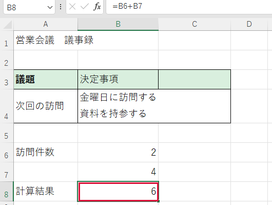

簡単な計算式を使いたい
欄に入った数字を使うと、後から件数を変えても結果が更新されます。
操作手順
- 結果を表示する空欄をクリックします。例ではB8（B列の8行目）です。
- 半角で =B6+B7 と入力します。先頭の = が計算の合図です。引き算は -、掛け算は *、割り算は / を使います。
- Enter を押します。式の代わりに答えが表示されます。

できたか確認
B6が2、B7が4なら答えは6です。結果の欄をクリックすると、表の上の数式バーで式を確認できます。
注意点
割る数が0や空欄だと割り算はできません。式は既存の入力欄や計算欄に上書きせず空欄で試してください。